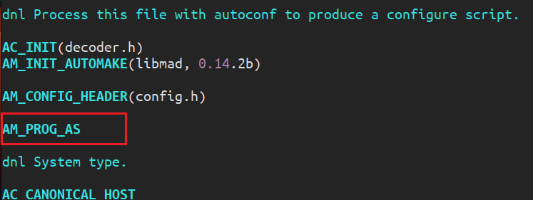
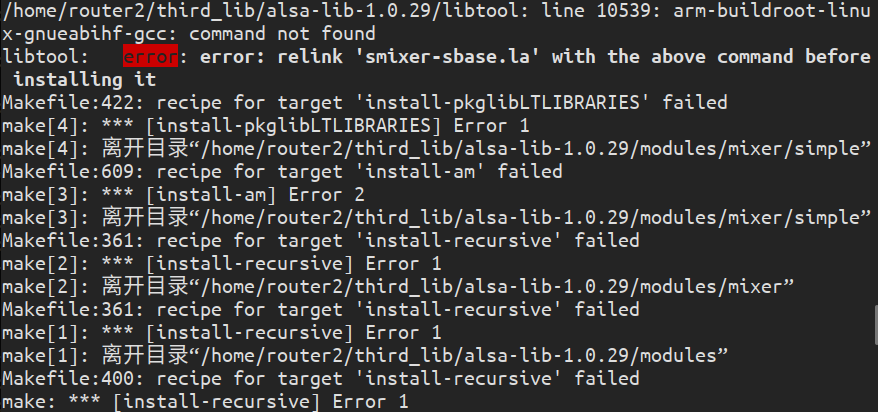
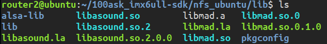
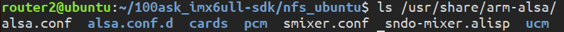

IMX6ULL-交叉编译Mplayer
IMX6ULL-交叉编译Mplayer
环境
硬件环境
- 开发板型号： 100ask_imx6ull_pro 开发板
- 处理器类型：NXP IMX6ULL
- **处理器架构：**恩单核 Cortex-A7
- **处理器主频：**800MHZ
- 内存容量：512 MB DDR3
- 存储介质：4GB eMMC
软件环境
- 宿主机
- 宿主机操作系统：Ubuntu 18.04
- 交叉编译器：100ask 提供的工具链 arm-buildroot-linux-gnueabihf- 支持的最低内核版本：4.9.0
- 开发板
- **U-Boot：**一开始用的 NXP 官方提供的版本但不能正常启动内核，后改为 100ask 提供的版本
- 内核版本： NXP 提供的 4.9.88 版本
- 根文件系统类型：BusyBox 1.29.0
编译过程
mplayer 依赖 alsa 库（音频）和 libmad 库（对 MP3 进行解码），所以先交叉编译 mplayer 和 libmad，
交叉编译 libmad
libmad 是一个开源的 MP3 解码库，mplayer 使用 libmad 进行对 MP3 的支持。
下载地址：
解压压缩包有以下文件：
1 | acconfig.h CREDITS global.h layer3.c stamp-h.in VERSION |
可见有 configure.in 和 Makefile.am 文件，我们需要生成 configure 和 Makefile.in 文件才能生成 Makefile。
执行 aclocal ，生成 aclocal.m4 文件
1 | aclocal |
执行 autoconf， 生成 configure 文件
1 | autoconf |
执行 libtoolize，生成ltmain.sh 文件
1 | libtoolize |
执行 autoheader ，生成 config.h.in 文件
1 | autoheader |
执行 automake命令，生成 Makefile.in 文件
1 | automake --add-missing |
出现错误：
1 | automake: warning: autoconf input should be named 'configure.ac', not 'configure.in' |
发现有两类错误：一类是缺少文件，一种是宏定义缺失。
第一类错误：加上选项 --add-missing 会自动生成缺少的文件，但是运行之后没有生成缺少的文件，这时我们再手动创建以下：
手动创建其他缺少的文件：
1 | touch NEWS AUTHORS ChangeLog |
第二类错误：在 configure.in 文件中添加 AM_PROG_AS ：

添加完重新运行 aclocal 更新 aclocal.m4 文件
1 | aclocal |
运行 autoconf 更新 configure 脚本：
1 | autoconf |
运行 automake 生成 Makefile.in 文件：
1 | automake --add-missing |
此时所有文件如下：
1 | acconfig.h configure frame.h ltmain.sh stream.h |
执行 configure 脚本文件生成 Makefile 文件：
1 | ./configure --host=arm-linux CC=arm-buildroot-linux-gnueabihf-gcc --prefix=/home/router2/third_lib/tmp/arm-libmad-0.14.2b --disable-debugging --enable-static --enable-shared |
make 命令编译
1 | make -j8 |
提示错误：
1 | gcc: error: unrecognized command line option ‘-fforce-mem’; did you mean ‘-fforce-addr’? |
修改 Makefile 文件，查找 -fforce-mem ，将其删除即可。
再次编译就能成功了，最后进行 make install 生成目标文件。
1 | make install |
交叉编译 libalsa
libalsa 是
下载地址：
解压得到以下文件：
1 | acinclude.m4 ChangeLog doc INSTALL MEMORY-LEAK src utils |
可见有 configure.ac（跟 configure.in 相同，只是 automake 版本不同的原因） 和 Makefile.am 文件，我们需要生成 configure 和 Makefile.in 文件才能生成 Makefile。
执行 aclocal ，生成 aclocal.m4 文件
1 | aclocal |
执行 autoconf， 生成 configure 文件
1 | autoconf |
执行 libtoolize，生成ltmain.sh 文件
1 | libtoolize |
执行 autoheader ，生成 config.h.in 文件
1 | autoheader |
执行 automake命令，生成Makefile.in 文件
1 | automake --add-missing |
执行 configure 脚本文件生成 Makefile 文件：
1 | ./configure --host=arm-linux CC=arm-buildroot-linux-gnueabihf-gcc --prefix=/home/router2/third_lib/tmp/arm-libalsa-1.0.29 --with-configdir=/usr/share/arm-alsa --disable-python --enable-shared |
需要添加 --with-configdir 选项设置 alsa 编译出来的配置文件存放位置，保证 ubuntu 和开发板根文件系统的路径一致。否则移植到开发板时会出现以下错误：
1 | ALSA lib conf.c:3512:(snd_config_hook_load) cannot stat file/directory /home/router2/third_lib/tmp/arm-libalsa-1.0.29/share/alsa/cards/aliases.conf |
最后编译安装即可：
1 | make -j8 |
出现该错误：

解决方法是切换到切换到 root 用户重新 make install 即可解决。
1 | sudo su |
交叉编译 Mplayer
MPlayer是一款开源多媒体播放器，MPlayer基于命令行界面，在各操作系统也可选择安装不同的图形界面。mplaye r的另一个大的特色是广泛的输出设备支持。它可以在 X11、Xv、DGA、OpenGL、SVGAlib、fbdev、AAlib、DirectFB 下工作，我们使用开发板的话，选择使用 fbdev 输出即可。
下载地址：
解压之后有现成的 configure 文件，不用再用 automake 和 autoconf 生成了。
配置：
1 | ./configure --prefix=/home/router2/third_lib/tmp/arm-libmplayer-1.1 --cc=arm-buildroot-linux-gnueabihf-gcc --host-cc=gcc --target=arm-linux --disable-mencoder --disable-live --disable-mp3lib --disable-win32dll --disable-dvb --disable-dvdread --disable-dvdnav --disable-dvdread-internal --disable-tv --disable-ivtv --enable-fbdev --disable-sdl --enable-mad --enable-alsa --enable-cross-compile --enable-armv5te --extra-cflags="-I /home/router2/third_lib/tmp/arm-libalsa-1.0.29/include -I /home/router2/third_lib/tmp/arm-libmad-0.14.2b/include" --extra-ldflags="-L /home/router2/third_lib/tmp/arm-libalsa-1.0.29/lib -L /home/router2/third_lib/tmp/arm-libmad-0.14.2b/lib" |
--host-cc=gcc：指定宿主系统的 C 编译器为 gcc，即目前使用的 Ubuntu 的编译器--target=arm-linux：指定目标平台为 ARM 架构的 Linux- 这里是 -cc 之前是 CC，这个得看 configure 文件的定义
--extra-cflags依赖的头文件目录--extra-ldflags：依赖的库文件目录
configure 参数的含义可查看 configure 文件，这里的参数添加参考：
AI 生成：
您提供的是一系列配置选项，用于编译 MPlayer 时禁用和启用特定的功能。下面是每个选项的简要说明和它们可能的用途：
--disable-mencoder：禁用 MEncoder 的编译，MEncoder 是一个视频编码器。--disable-live：禁用 LIVE555 Streaming Media 的支持。--disable-mp3lib：禁用内置的 mp3lib。--disable-win32dll：禁用 Win32 DLL 支持，这通常用于 Windows 系统。--disable-dvb：禁用 DVB 视频输出，DVB 是一种数字视频广播标准。--disable-dvdread：禁用 libdvdread 支持，这是一个用于读取 DVD 的库。--disable-dvdnav：禁用 libdvdnav 支持，这是一个用于处理 DVD 导航的库。--disable-dvdread-internal：禁用内部 libdvdread 支持。--disable-tv：禁用电视接口，包括 TV/DVB grabbers。--disable-ivtv：禁用 IVTV TV-Out 视频输出。--enable-fbdev：启用 FBDev 视频输出，这是一个 Linux 帧缓冲设备。--disable-sdl：禁用 SDL 视频输出，SDL 是一个跨平台的多媒体库。--cc=arm-none-linux-gnueabi-gcc：指定用于编译的 C 编译器为 ARM 架构的交叉编译器。--host-cc=gcc：指定宿主系统的 C 编译器为 gcc。--target=arm-linux：指定目标平台为 ARM 架构的 Linux。--enable-mad：启用 libmad 支持，这是一个用于解码 MPEG 音频的库。--enable-alsa：启用 ALSA 音频输出，ALSA 是 Linux 系统中的标准音频系统。--enable-cross-compile：启用交叉编译，允许在不同平台之间编译软件。--enable-armv5te：启用 ARMv5TE 支持，ARMv5TE 是 ARM 架构的一个版本，带有 DSP 扩展。这些选项表明您可能正在为 ARM 架构的 Linux 系统交叉编译 MPlayer，并根据您的特定需求启用或禁用了某些功能。例如，您可能不需要处理 DVD 或 DVB 内容，但需要支持 ALSA 音频和 MPEG 音频解码。使用这些选项，您可以定制 MPlayer 的构建以适应您的硬件和软件环境。
运行 configure 脚本文件后提示错误：
1 | Error: yasm not found, use --yasm='' if you really want to compile without |
查资料说是缺少 yasm 环境，安装：
1 | sudo apt-get install yasm |
mplayer的编译安装_error: yasm not found, use --yasm=’’ if you really-CSDN博客
再次运行成功，进行编译安装：
1 | make -j8 |
出现错误：
1 | install -m 755 -s mplayer /home/router2/third_lib/tmp/arm-libmplayer-1.1/bin |
需要修改 config.mak 文件，查找 INSTALLSTRIP 将后面的 -s 删除，再次编译安装即可成功。
生成文件如下，bin 目录有可执行文件 mplayer
1 | router2@ubuntu:~/third_lib/tmp/arm-libmplayer-1.1$ ls |
查看文件属性是否为 arm 架构的：
1 | router2@ubuntu:~/third_lib/tmp/arm-libmplayer-1.1$ file bin/mplayer |
测试
将 mad 和 alsa 的 lib 目录下的文件放入开发板的 /usr/lib 目录下
文件有如下：

将 alsa 的生成的配置文件目录 /usr/shar/arm-alsa 放到开发板相同目录下。

打开开发板根文件系统中的 /etc/profile 文件添加以下信息指定 alsa 的配置文件：
1 | export ALSA_CONFIG_PATH=/usr/share/arm-alsa/alsa.conf |
将可执行文件 mplayer 放进开发板的 /bin 目录。
使用 mplayer 测试能否正常播放：发现只有画面没有声音输出，后发现是没有移植好音频驱动的原因，后面再移植音频驱动。